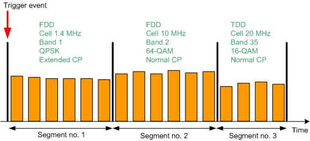
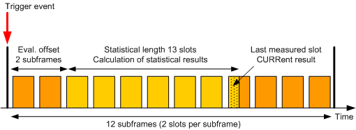
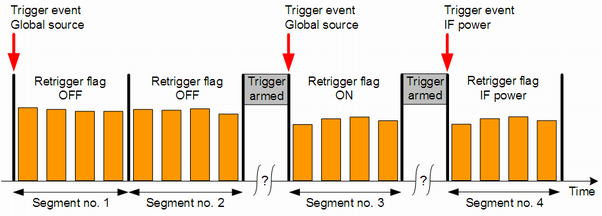

Each segment contains an integer number of subframes and is measured at constant analyzer settings. The figure below shows a series of three segments with different lengths, expected powers and the listed signal properties. Orange rectangles depict subframes.

You can configure up to 2000 segments in total as preparation for list mode measurements. One list mode measurement can cover up to 1000 segments with in total up to 4000 measured subframes. For details, see "Maximum number of measured subframes". That means, for each measurement you select a range of up to 1000 segments to be measured from the total range of up to 2000 configured segments.
In list mode, the R&S CMW can measure modulation results (including inband emission and equalizer spectrum flatness results), ACLR, spectrum emission and power monitor results. The measured quantities can be enabled or disabled individually for each segment.
A segment without any enabled measurements is called inactive segment. Inactive segments are useful for time-consuming UE reconfiguration. For that purpose, you define alternating active and inactive segments. In the active segments, you measure the signal. In the inactive segments, you reconfigure the UE for the next measured segment.
It is possible to measure all subframes of a segment or to exclude subframes/slots at the beginning and/or the end of the segment. The evaluation offset specifies how many subframes are excluded at the beginning of the segment. The statistical length defines the number of slots to be measured. The "current" result of a segment refers to the last measured slot of the statistical length. Additional statistical values (average, minimum, maximum and standard deviation) are calculated for the entire statistical length. Statistical length and statistical values are not relevant for power monitor measurements. The following figure provides a summary.

Two consecutive segments are often measured at different analyzer settings. The R&S CMW changes the analyzer settings in the last subframes of the first segment. This change impairs the accuracy of the measurement results for up to three subframes at the end of the segment. The affected subframes/slots are automatically excluded from the measurement.
Results of other slots that cannot be measured accurately can also be discarded automatically (for example, overflow, low signal or synchronization error). For automatic discarding, set parameter "Measure on Exception" = Off.
The reached statistical length, a reliability indicator for the measurement and a reliability indicator for the segment are included in most measurement results. TDD downlink subframes and special subframes are automatically ignored and do not contribute to the (reached) statistical length.
The limit of 4000 measured subframes comprises measured subframes included in a statistical length and subframes measured with the power monitor. The not measured subframes of an active segment do not contribute. Other contributions that "cost" subframes are inactive segments and triggering of a segment.
- One subframe per inactive segment
- Two times the number of triggered segments
- For each active segment without power monitor:
Subframes in the statistic count of the segment plus three subframes - For each active segment with power monitor:
All subframes in the segment
The limit of 4000 measured subframes applies if a baseband measurement board with 4 GB memory is installed. If less memory is installed, the limit is 2000 measured subframes.
A list mode measurement can either be triggered only once, or it can be retriggered at the beginning of specified segments.
In "Once" mode, a trigger event is only required to start the measurement. As a result, the entire range of segments (up to 1000) is measured without additional trigger event. The trigger is rearmed after the measurement has been finished. The retrigger flag of the first segment specifies which trigger source is used (IF power trigger or trigger source configured via global trigger settings). The retrigger flags of subsequent segments are ignored.
The "Once" mode is recommended for UL signals with accurate timing over the entire range of segments.
In "Segment" mode, the retrigger flag of each segment is evaluated. It defines whether the measurement waits for a trigger event before measuring the segment, or not and which trigger source is used. For the first segment, the value OFF is interpreted as ON.
Retriggering the measurement is recommended, if the timing of the first subframe of a segment is inaccurate, for example because of signal reconfiguration at the UE. Furthermore, retriggering from time to time can compensate for a possible time drift of the UE.
In the following example, the "Segment" mode is enabled. The measurement stops when the second segment has been captured and waits for a trigger event from the globally configured trigger source, before capturing the third segment. After the third segment, it waits for a trigger event from the IF power trigger source, before capturing the fourth segment.

Segments with active spectrum measurements and channel bandwidths > 10 MHz are divided into three parts. Segments with active spectrum measurements and carrier aggregation (CA) are divided into five parts.
The first part is measured using the nominal carrier frequency and is evaluated for all enabled measurements. The other parts are only evaluated for spectrum measurements.
The maximum statistical length reachable in such a segment is smaller than the statistical length reachable with disabled spectrum measurements. Without CA, it is reduced to one third. With CA, it is reduced to one fifth.
Assign more subframes to reach a higher statistical length. The minimum length of such a segment equals 9 subframes without CA and 15 subframes with CA. If you configure a shorter segment length, the effect is the same as if you disable the spectrum measurements for the segment.
Segment configuration and measurement are independent from each other. To perform a sequence of measurements at maximum speed, proceed as follows:
Configure all segments ever needed.
The R&S CMW supports a range of up to 2000 configured segments.
Select up to 1000 consecutive segments within the configured segment range (consider the maximum number of measured subframes).
Measure the selected segments.
Repeat steps 2 and 3 as often as needed.
The list mode is essentially a single-shot remote control application. When a measurement is initiated in list mode, all defined segments are measured once. Afterwards, the results can be retrieved using FETCh commands.
The following remote control commands are used for list mode settings and result retrieval.
Parameters | SCPI commands |
|---|---|
Activate / deactivate list mode | |
Range of measured segments | |
Segment configuration (duplex mode, cell bandwidth, number of subframes, ...) | |
Statistical length and result activation | |
Trigger mode | |
R&S CMWS connector | |
Retrieve results | FETCh:LTE:MEAS<i>:MEValuation:LIST:SEGMent<no>:... FETCh:LTE:MEAS<i>:MEValuation:LIST:... The segment number <no> for configure commands is an absolute number (1 to 2000). The segment number <no> for result retrieval is a relative number within the range of measured segments (1 to 1000). Example: Segment 1 to 100 configured. Segment 50 to 59 measured. For result retrieval <no> = 1 refers to segment 50, <no> = 10 to segment 59. |
You can deactivate the list mode via a command and also via the GUI:
Go to local using the corresponding hotkey.
The active list mode is indicated in the upper right corner of the current view by the words "List Mode!".
Open the configuration dialog box.
In section "Measurement Control", select another measurement mode.
Global and list mode parameters Some settings are available as special list mode settings and as multi-evaluation settings (e.g. duplex mode, cell bandwidth and modulation scheme). In list mode, the R&S CMW ignores these multi-evaluation parameters. All other settings not available as special list mode settings are taken from the multi-evaluation measurement, e.g.:
|